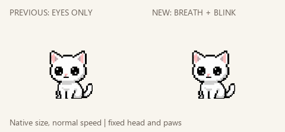
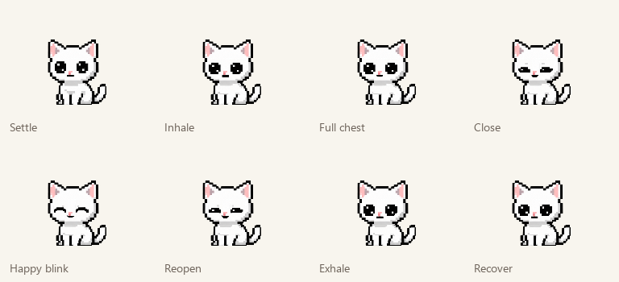

A quiet breath and a happy blink.
Previous eye-only rest on the left, newly drawn breathing and expressions on the right. Native desktop size, normal speed. Chest/shoulders breathe locally; head height, paws, tail and physical scale stay anchored.

Four-second loop with a quick300ms happy blink and quiet holds. The comparison repeats for review.

Original left/right looks and lazy tail remain restored. Other animations are unchanged.
Source, checks and limits